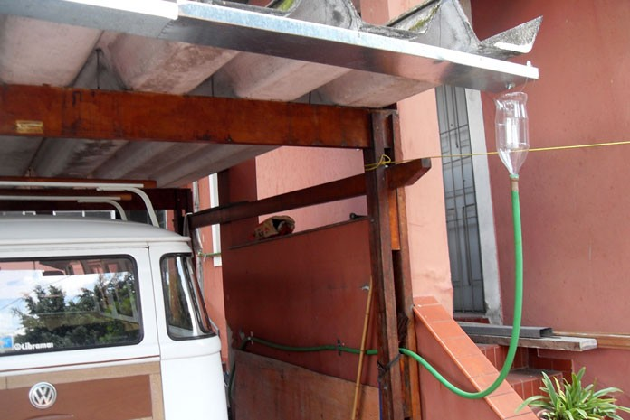

O Plástico é considerado inimigo por muitos, por ser um material que de forma negativa, acaba afetando muito o meio ambiente, canudos, garrafas, sacolas, brinquedos entre outras coisas acabam sendo jogadas por “ai”, nas ruas e oceanos de qualquer forma, sem nenhuma espécie de tratamento. O que muitas pessoas não fazem é procurar formas de como reutilizar esse material, aqui estão algumas dicas
Se você não consegue ver alguma utilidade para o plástico na sua casa, aqui esta um exemplo de como reutilizar:

Você pode fazer esses vazos com apenas garrafas pet, e alguns barbantes, e decorar sua casa.
Alguns moradores de São Paulo tiveram essa ideia bem bacana de reutilizar garrafas pet para coletar água da chuva, e assim até mesmo economizar água, utilizando a água coletada para lavar a garagem, o carro ou até mesmo regar as plantas.
